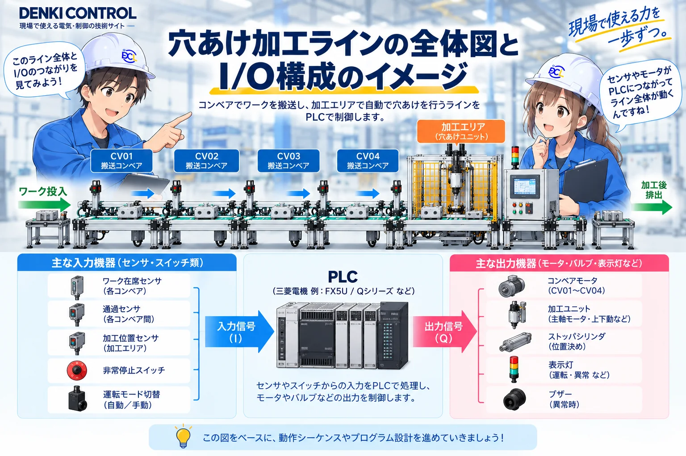
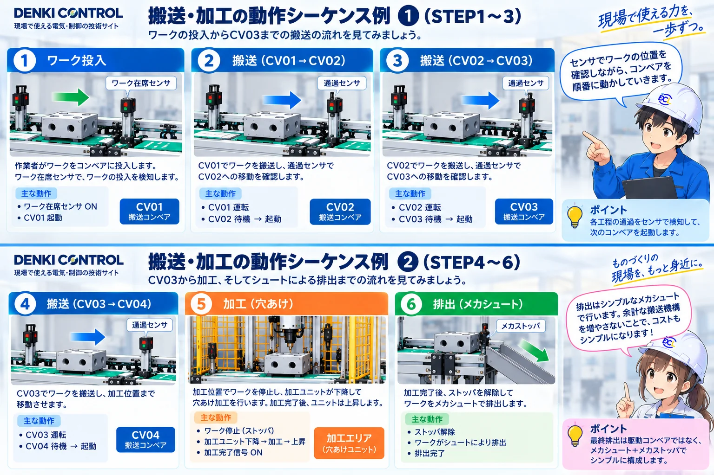
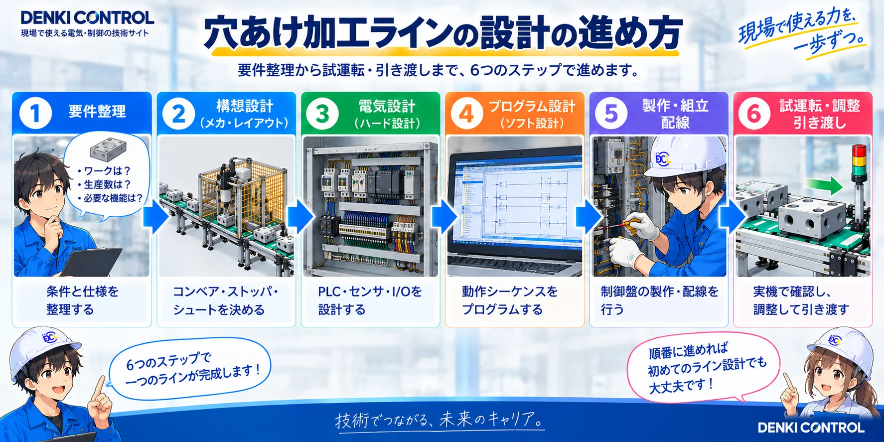

1. まずは「どんな設備をつくるのか」を決める
題材にするのは、樹脂ワークを1個ずつ投入し、CV01〜CV04を通して加工エリアへ送り、穴あけ加工を行ったあとに排出する小型の仮想生産ラインです。

先輩いきなりラダーを書くのではなく、まず設備がどう動くかを決めるところから始めます。

後輩PLCより先に、機械の流れと完了条件を整理するんですね。
2. ラダーより先に設計条件を固定する
プログラムから考え始めると、途中でI/Oや動作条件が足りなくなりやすいので、まず設備として何を実現するかを整理します。
| 項目 | 今回の基準 | 設計で効いてくる部分 |
|---|---|---|
| ワーク | MCナイロン W100×D60×H20 mm | 検出、位置決め、加工位置 |
| 加工 | 上面中央へφ8・深さ15 mmの止まり穴 | 加工開始・完了条件 |
| 搬送 | CV01〜CV04を独立区間として扱う | 在席管理、区間搬送 |
| バッファ | CV02〜CV04で待機可能 | 下流空きと搬送許可 |
| 排出 | 加工完了後にストッパを解除しシュート側へ排出 | 加工完了と排出確認 |
設計の順番を守る
「何を検出して、何を動かして、何を完了条件にするか」を先に決めると、あとでPLCロジックへ落とし込みやすくなります。
3. 設備全体とPLCのI/Oをつなげて見る
設備構成が決まったら、次は「PLCが何を見て、何を動かすのか」を整理します。入力側と出力側を分けて考えるだけでも、設備全体の役割が見えやすくなります。

ワーク在席、区間通過、加工位置、運転モード、運転許可など。
CV01〜CV04、ストッパ、加工ユニット、表示灯・ブザーなど。
安全機能は通常PLCだけで完結させない
このシリーズでは通常制御を中心に扱います。実機の安全機能や主回路・保護設計は、使用機器・リスク評価・メーカー資料に基づいて別途確認します。
4. 搬送と加工を「順番」で整理する
I/Oを決めただけでは設備は動きません。どの条件で次の工程へ進むのかを、投入から加工・排出までの流れとして整理します。

搬送完了は1つの信号だけで決めない
搬送元・搬送先・通過確認などを組み合わせ、開始条件と完了条件を分けて考えると、後からラダーへ落とし込みやすくなります。
5. 設備設計は6つの工程で進める
今回のプロジェクトでは、要件整理から試運転までを6段階に分けます。完成コードよりも「何をどの順番で決めるか」を重視します。

条件と仕様を整理する。
コンベア・ストッパ・加工部の配置を決める。
PLC、センサ、I/Oの構成を考える。
動作シーケンスを制御ロジックへ落とす。
図面と仕様に沿って設備を形にする。
動作を確認し、問題を洗い出して改善する。
6. このシリーズでは「なぜそう設計したか」も残す
完成したI/O表だけでなく、設計途中の判断を残すと、あとから見返したときに設備の考え方が追いやすくなります。
区間ごとに状態を見ながら、下流の空きに合わせて搬送できる構成にします。
受け渡しの競合を避けつつ、離れた区間は並行動作できる考え方にします。
センサが一度ONになり、その後OFFへ戻ったことを通過確認として扱います。
下流待ちや排出満杯は状態として扱い、指令に対する応答不成立とは分けて考えます。
7. 現在地：設計済みと動作確認済みを分ける
ここまでで設備仕様、I/Oの考え方、搬送・加工シーケンスは整理できました。一方で、GX Works2への実入力とシミュレーション確認はまだ行っていません。
「設計できた」と「動いた」は別
このシリーズでは、紙上設計・PLC入力・シミュレーション確認を同じ「完成」にまとめず、確認できた段階をそのまま表示します。
この設備を、設計の順番でシリーズ化する
今読んでいる位置と、次に進む記事がすぐ分かるようにシリーズ全体を並べています。
- 第1回設備仕様と全体構想今ここ
- 第2回PLC・I/O構成を決める次ここ
- 第3回CV01〜CV04の搬送制御を考える
- 第4回加工ステーションのシーケンスを作る
- 第5回手動運転・異常処理・復旧を設計する
- 第6回GOT画面と保守・生産情報を作る
- 最終GX Works2へ実装してシミュレーションする
この記事は役に立ちましたか？
今後の記事づくりの参考にします。どちらかを選ぶだけで回答できます。
回答は匿名で集計し、個人情報の入力はありません。